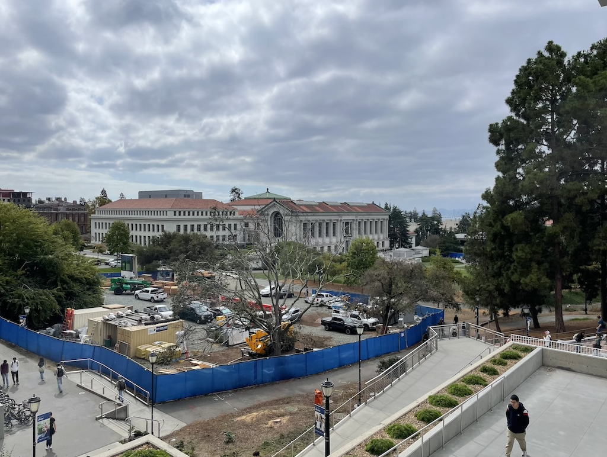
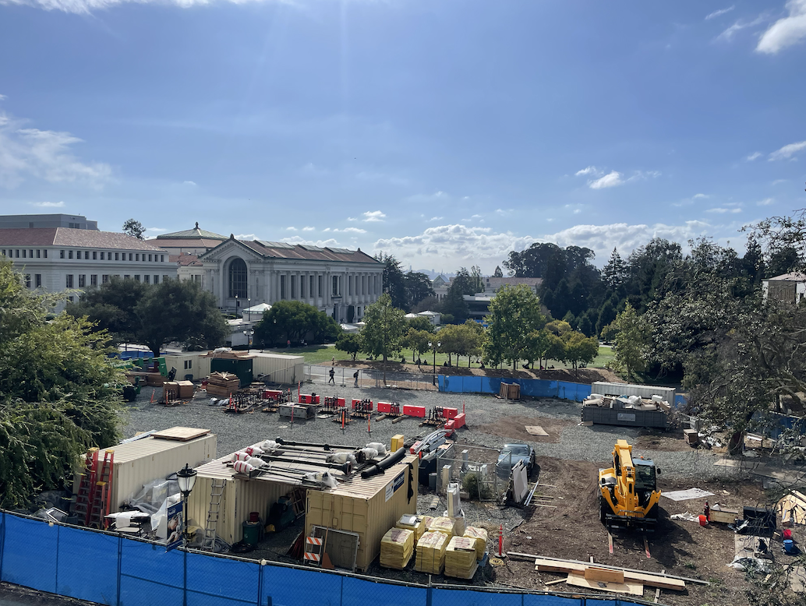
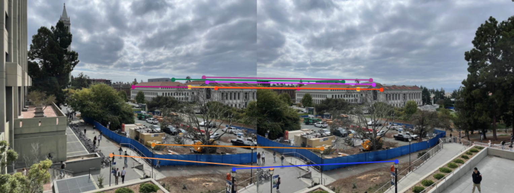
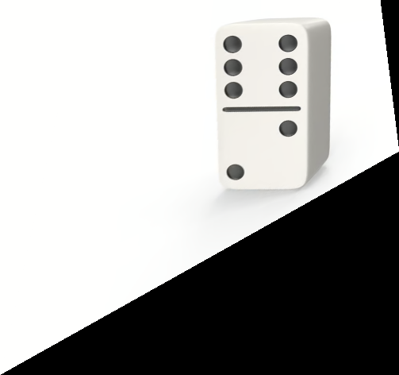
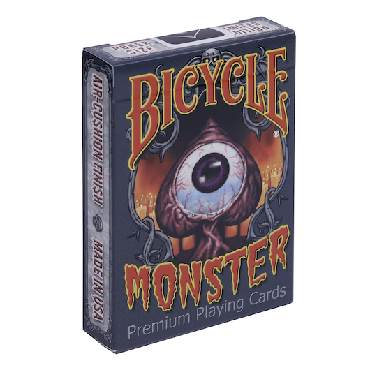
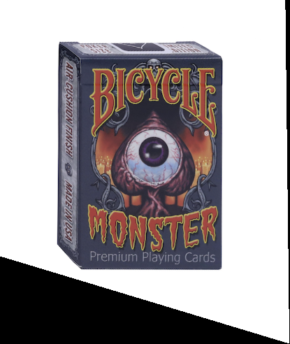
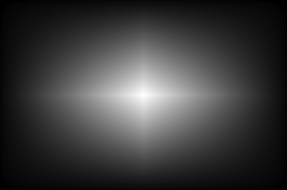
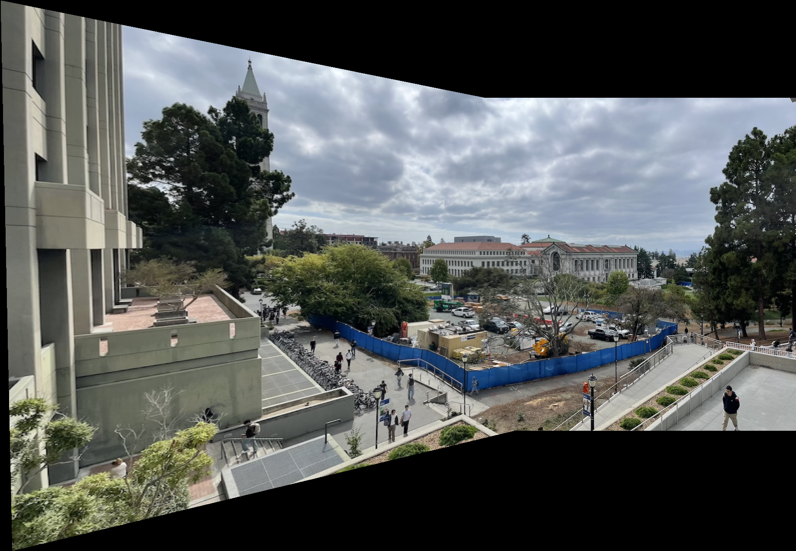
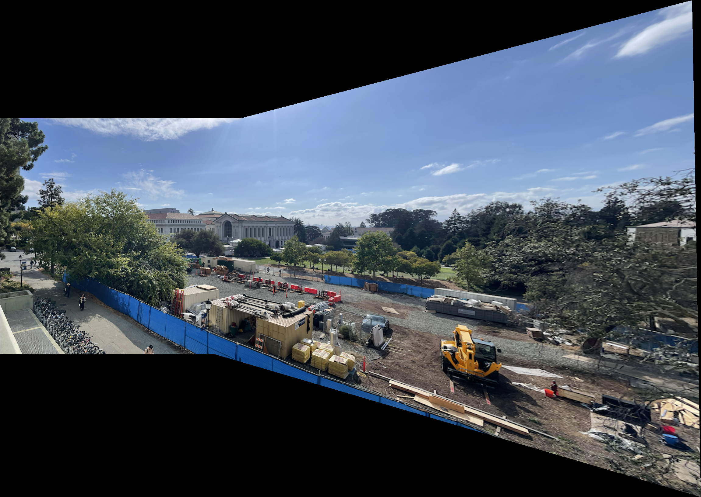
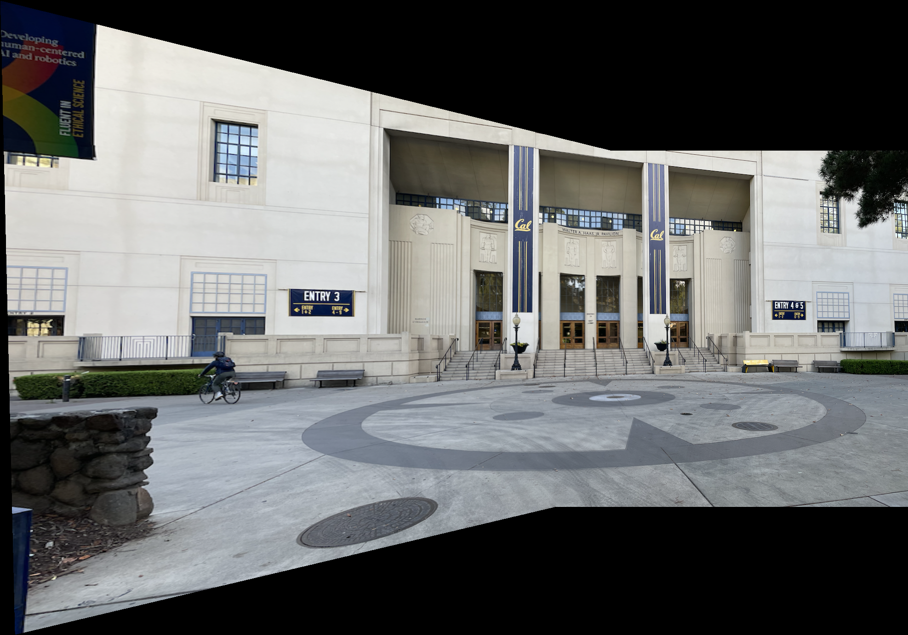

This project uses homography transformation in order (1) warp images to rectify images (e.g. take quadrilateral and warp them into squares) and (2) construct mosaic by stiching together photo
such that we get one large photo. This part of the project was really fun; I got to take my own photos, stitch them together and see a very cool
resulting mosaic at the end. Furthermore, I used homography transformation in my Computer Vision research to reconstruct birds eye views of scenery, so seeing
how homographic transform worked under the hood was extremely interesting.
Part A.1: Shooting the Pictures
The first step was to capture sets of images with projective transformations between them so that I could use it later on
when making mosaics. I achieved this by standing in one spot and rotating my camera, ensuring the center of projection remained fixed.
I aimed for about 50% overlap between consecutive shots to provide enough common features for alignment (or shots such that there were common
identifiable landmarks in each photo). Below are photographs from across UC Berkeley, one being in front of the Haas Pavilion and the other
two being photographs of Doe Library standing from different vantage points.
Image Set 1: Doe Library from Grimes Center
Left Image

Right Image
Image Set 2: Doe Library from Evans Hall
Left Image

Right Image
Image Set 3: Haas Pavilion
Left ImageRight Image
Part A.2: Recovering Homographies
A homography is a 3x3 matrix that maps points from one plane to another. To compute it, we need at least 4 pairs of corresponding points between two images.
I used an online tool to manually select 9 corresponding points for each image pair in the Doe Library from Grimes set. These points allow us to set up an overdetermined linear system of equations
in the form Ah=B, which can be solved for the 8 unknown parameters of the homography matrix H using the method of least squares.
System of Equations
For each of the 9 point correspondences (x, y) in the left image of Doe from Grimes and (u, v) in right image of Doe from Grimes, we can derive the following system of linear equations:
Stacking these for all n points gives us a 2n x 8 matrix A and a 2n x 1 vector B, which we can use to solve for H using the Least Squares Solution.
We postpend a 1 to the resulting homography matrix to get a nice 3 x 3 matrix. We can generalize the equation for any number of correspondences above 4.
Example: Point Correspondences & Resulting Homography

Manually selected point correspondences for the Doe Library from Grimes images.
With the homography matrix, we can now warp images. The algorithm for warping images is as follows. First, we must determine the output dimensions of the resulting warp.
I acheived this by applying the homography transformation H onto the corners of the input image, finding the minimum and maximum x and y coordinates and subtracting the respective
minimum and maximums for the x and y axis to get the new side lengths. After instantiating a blank canvas, I iterate through each of the points in the canvas and fill them in
with the interpolated color value of the corresponding point in the original image. We can easily find the corresponding point in the original image by computing
H-1 and left matrix multiplying it with the vector containing the x and y positions (displaced by the respective minimum values) and an "extra" 1 in the output image.
This yields us the x and y position in the original image. We then interpolate the pixel value to fill in on the canvas, using either nearest neighbor or bilinear interpolation.
Bilinear Interpolation: Bilinear Interpolation works by using a weighted sum of the values of the closest four integer corners to the x and y coordinates on the original image
and returning that value as the pixel value. We can find these four corners by using combination of flooring and rounding up the x and y values. Assuming that we have the pixel position
on the original image, we can find its interpolated value by solving for \(f(x,y)\) (given that \(Q_{11}, Q_{21}, Q_{12}, Q_{22}\) represent the four corners and \(f\) is the function
that gives us the value at the pixel coordinate) (from Wikipedia)
\[
\begin{align*}
f(x,y_1) &= \frac{x_2-x}{x_2-x_1}f(Q_{11}) + \frac{x-x_1}{x_2-x_1}f(Q_{21}) \\
f(x,y_2) &= \frac{x_2-x}{x_2-x_1}f(Q_{12}) + \frac{x-x_1}{x_2-x_1}f(Q_{22}) \\
f(x,y) &= \frac{y_2-y}{y_2-y_1}f(x,y_1) + \frac{y-y_1}{y_2-y_1}f(x,y_2)
\end{align*}
\]
Nearest Neighbor Interpolation: Nearest Neighbor Interpolation works by simply interpolating the value of the pixel closest to the provided x and y coordinate (which we can easily find by
rounding both the given x and y coordinate to the nearest number and returning the pixel value of the image at that location).
Image Rectification
A great way to test the warping code is to perform image rectification. This involves taking a photo of a planar surface in perspective and warping it so that it appears front-on.
I selected four points forming a quadrilateral on the source image and defined their corresponding points as the corners of a rectangle, with the goal to visualize the image as if it were
to be seen front on. Below are examples of this rectification, with the original, bilinear rectification, and nearest neighbor rectification provided as well. Observe that in the domino photo,
the oval divots in the domino in perspective revert to circles in the rectified "front-on" view and that the text on the playing cards box is no longer slanted, but rather straight (similar to
how it would look if we looked at the box head on).
Domino in Perspective

Rectified Domino using Bilinear Interpolation Took 7.181 secondsRectified Domino using Nearest Neighbor Interpolation Took 5.255 seconds

Playing Card Box

Rectified Playing Card Box using Bilinear Interpolation Took 6.217 secondsRectified Playing Card Box using Nearest Neighbor Interpolation Took 5.306 seconds
Interpolation Comparison
Nearest neighbor interpolation is faster (which compounds as the images get bigger)
as it just rounds coordinates, but it can produce blocky, aliased results. While not apparent in the domino photo, we can see
clear signs of aliasing in the playing card box photo, where we can clearly see the aliasing of the letters on the box. Bilinear interpolation is slower as it computes
a weighted average of four pixels, but it produces a much smoother and more visually appealing output. The difference is most noticeable on the playing card box with a lot
of details, but less noticeable on the image of the domino photo where there are less details.
Part A.4: Creating the Mosaic
The final step is to combine the warped images into a single mosaic. To get the final mosaic, we first choose points in both the first image and second image that correspond to the same objects.
These points will be chosen from the region of overlap between the two images. After that, we compute the homography matrix H mapping the points from the first image onto the points in the second image.
Then, we wish to find the size of the output image. Since we are working with two images, we find where the homography matrix transforms the corners of each image, find the minimum and maximum x and y coordinates
across all 8 corners and compute the new output dimensions by subtracting the respective minimum and maximum x and y coordinates. Additionally, we'll want to dispalce the first image such that only the region of intersection
overlap. We can do that by constructing the translation matrix T
\[
T =
\begin{bmatrix}
1 & 0 & -\text{min}_x \\
0 & 1 & -\text{min}_y \\
0 & 0 & 1
\end{bmatrix}
\]
We will be using this translation matrix later on so that points are mapped onto the canvas instead of out-of-bounds. Since the images will overlap, we need to make sure that the region of overlap doesn't
"double-count" the overlapping pixel. I do this by constructing another image containing solely alpha values. This image will be a gradient image, with the center being white and tappering off in all dimensions,
getting darker the further away we go from the center.

Alpha image we use for "blending"
Finally, we construct the mosaic! We start by warping the first image using the homography matrix T @ H and warping the second image by T. We also warp the alpha image for photo 1 by T @ H and
the alpha channel for image 2 by T. We do not have to introduce new logic here, we simply use the code to warp from the previous section with the output dimensions that we specified. For presentation purposes,
I chose to use bilinear interpolation, as it provided the most visually appealing results, despite the higher runtime. Finally, we construct the final image by multiplying each warped image by its respective alpha
image, and adding the two together. Finally, we normalize each pixel using the sum of the alpha values at that pixel as the denominator. After clipping pixel values to be between 0 and 255, we have our final mosaic
image as shown below!
Mosaic 1: Doe Library from Grimes Center
Doe from Grimes Left ViewDoe from Grimes Right View

Doe Library from Grimes Center
Mosaic 2: Doe Library from Evans Hall
Doe from Evans Hall Left ViewDoe from Evans Hall Right View

Doe from Evans Hall
Mosaic 3: Haas Pavilion
Haas Pavilion Left ViewHaas Pavilion Right View

Final Haas Pavilion Mosaic
Part B.1: Harris Corner Detection
We begin the automatic pipeline with Harris corner detection (single scale, no sub-pixel refinement). I used the provided
sample code to compute the corner response and then overlaid the detected corners on the image.
Next, I implemented Adaptive Non-Maximal Suppression (ANMS) to select a well-distributed subset of strong corners.
Detected Corners (No ANMS vs ANMS)
No ANMSWith ANMS
How ANMS Is Implemented
Given the Harris response map h and detected corner coordinates coords = (y_vals, x_vals), I compute an
Adaptive Non-Maximal Suppression radius for each corner and then keep the corners with the largest radii:
Inputs: h, coords, desired count num_interest_points (e.g., 500), and a robustness factor c_robust (e.g., 0.9).
For each corner(x_i, y_i), read its response f_i = h[y_i, x_i].
Find stronger neighbors: build a boolean mask over all other corners selecting those with response f_j such that f_i < c_robust * f_j (and excluding itself).
Suppression radius: if any such stronger neighbors exist, compute the squared Euclidean distances from (x_i, y_i) to all of them using dist2 and take the minimum as the radius r_i; if none exist, set r_i = infty.
Rank and select: sort all corners by r_i in descending order and return the top num_interest_points points. Large radii indicate strong corners that are well-separated from other stronger corners.
Part B.2: Feature Descriptor Extraction
For each selected corner, I extracted an 8×8 descriptor sampled from a larger 40×40 window (blurred and downsampled)
to obtain smoother descriptors that are robust to small misalignments. I applied bias/gain normalization to each descriptor
(subtract mean and divide by standard deviation), omitting rotation invariance and wavelets.
How Feature Descriptors Are Extracted
For each corner coordinate, I extract a normalized 8×8 descriptor from a larger 40×40 window:
Boundary check: skip corners within 20 pixels of image edges to ensure the 40×40 window fits.
Extract 40×40 patch: centered on the corner to capture local image structure.
Gaussian blur: smooth the patch to reduce noise and improve robustness.
Downsample to 8×8: sample every 5th pixel to reduce 40×40 to 8×8, creating a compact descriptor.
Normalize: subtract mean and divide by standard deviation for bias/gain invariance.
Sample Extracted Descriptors
Several normalized 8×8 feature descriptors (visualized)
Part B.3: Feature Matching
I matched descriptors across image pairs using Euclidean distances and selected a threshold following Figure 6b in the paper to keep only confident matches.
How Feature Matching Works
I match features between image pairs using a simple distance-based approach:
Extract descriptors: compute normalized 8×8 descriptors for all corners in both images.
Flatten descriptors: convert 2D descriptors to 1D vectors for distance computation.
Find nearest neighbors: for each feature in image 1, find the closest feature in image 2 using Euclidean distance.
Apply threshold: only keep matches where the distance is below a specified threshold to filter out poor matches.
Return correspondences: output the coordinates and descriptors of all valid matches.
Matched Features Between Image Pairs
Matched features visualized from the Doe from Grimes image set
Matched features visualized from the Doe from Evans image set
Part B.4: RANSAC for Robust Homography
Using 4-point RANSAC, I estimated a robust homography from the noisy tentative matches, then reused the mosaicing pipeline
from Part A to warp and blend images. Below are side-by-side comparisons of manual stitching (from Part A) and automatic stitching
using the Harris+ANMS+Descriptors+Matching+RANSAC pipeline. I include four mosaics below, with their ransac'd point correspondences below,
with one failure case (explained below).
How RANSAC Works
RANSAC (RANdom SAmple Consensus) robustly estimates the homography by iteratively testing different models:
Random sampling: select 4 feature correspondences at random from the tentative matches.
Compute homography: fit an exact homography H using the 4-point algorithm on the selected correspondences.
Count inliers: project all points from image 1 using H and measure distances to corresponding points in image 2. Points with distance below threshold ε are considered inliers.
Keep best model: track the homography with the largest number of inliers across all iterations.
Refit on inliers: after the loop, recompute the homography using least squares on all inliers from the best model for improved accuracy.
This process is repeated for a maximum number of iterations, with the final robust homography being used for image warping and mosaic creation.
Mosaic 1: Doe Library from Grimes (Manual vs Automatic)
Correspondences after RANSAC
Manual mosaicAutomatic Doe from Grimes mosaic
Mosaic 2: Doe Library from Evans (Manual vs Automatic)
Matched features correspondencesCorrespondences after RANSAC
Automatic mosaic variant
Automatic Mosaicing Reflection
Overall, the automatic mosaicing results were fairly good, demonstrating the effectiveness of the Harris corner detection, ANMS, feature matching, and RANSAC pipeline. However, certain parts of the mosaics were blurry because the point correspondences were heavily concentrated on one aspect of the photo rather than being evenly distributed. This occurred as a result of RANSAC discarding many correspondences that didn't fit the dominant homography model, leading to an uneven distribution of matching points across the image.
The automatic mosaic algorithm catastrophically failed on the Haas Pavilion photo because the feature matching aspect matched unrelated points to each other due to the uniformity of the picture itself. The Haas Pavilion images lacked distinctive features and had very few "interesting" points, making it difficult for the Harris corner detector to find reliable keypoints. As a result, the points that RANSAC chose were suboptimal, leading to a really bad final outcome with severe misalignment and distortion in the final mosaic.